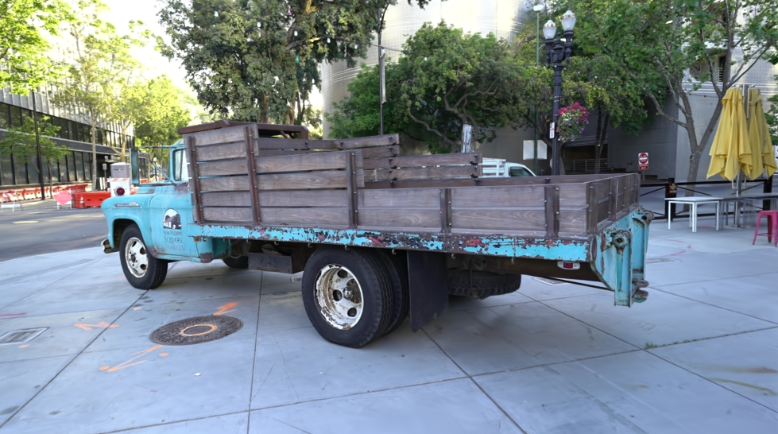
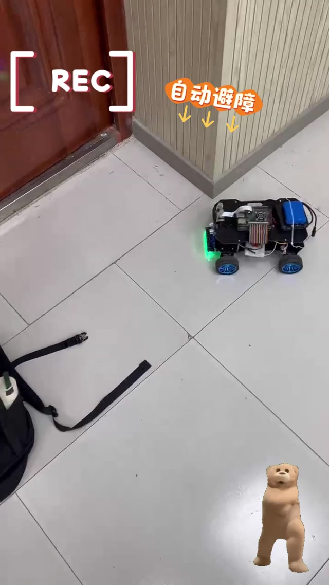

Welcome to my homepage
About Me
I am a computer science undergraduate in Taishan College at Shandong University. My work spans 3D scene representation, computer graphics, robotics, and interactive software. I am particularly interested in embodied AI and 3D vision, and I use hands-on projects to explore how perception and algorithms translate into working systems.
2023 — 2027Shandong UniversityTaishan College · Computer Science
Highlights
- 2026Silver Medal, CCPC National Invitational Contest (Qinhuangdao).
- 2026First Prize, Jiangshan Division, Huawei Software Elite Challenge; Top 32 in the Global Finals.
- 2025Silver Medal, CCPC National Invitational Contest (Northeast China).
Selected technical work
Research & Experiments
Independent experiments documented through code, reports, and measured results.

Computer graphics course experiment / 3D vision
Implemented post-training opacity and scale pruning on the Tanks & Temples truck scene, then measured point count, model size, rendering speed, and image quality. At an opacity threshold of 0.1, the model shrank from 487 MB to 243 MB; the report records an SSIM of 0.9563 for that setting.
3D Gaussian SplattingPruningPSNR / SSIM
Read the experiment report ↗LLMPEFT / REPRODUCTION
Independent method reproduction / machine learning
Implemented LoRA, a QuanTA-inspired baseline, and a QTHA approximation combining tensor-network layers with simulated quantum circuits. The accompanying notes document experiment configurations, available training logs, and methodological limitations.
LoRAPyTorchQuantum Simulation
Read the experiment notes ↗Engineering work
Selected Projects
Projects in robotics, computer science education, and software development.

Robotics / hardware & vision
Integrated motor control with ultrasonic obstacle avoidance, eight-sensor PID line tracking, and camera-based red/green traffic-light detection. A project demo is available in the repository.
Raspberry PiC / PythonOpenCV
01CPU
→ DISPLAY
Education / interactive web
Built interactive explanations of data representation, instruction flow, memory, and RISC-V formats. Users can also inspect C++ compilation through a local GCC service or the Compiler Explorer API.
Vue 3ExpressComputer Systems
02HEALTH
MANAGEMENT
Desktop application / client-server
Built a local JavaFX client and TCP server for recording, querying, and charting health data, with SQLite persistence and separate user/admin views.
JavaFXTCP SocketSQLite
More code and experiments on GitHub ↗
Competitions & service
Experience & Honors
Selected competition results and student leadership activities.
2025 — 2026Competitive programming
CCPC, CCSP & CCF-CSP
Silver Medals at the CCPC National Invitational Contests in Qinhuangdao (2026) and Northeast China (2025); Bronze Medal at CCSP (2025); score of 380/500 in the 41st CCF-CSP Certification (2026).
Software competition
Huawei Software Elite Challenge
First Prize, Jiangshan Division; Top 32 in the Global Finals.
Campus leadership
Youth League Branch Secretary
Taishan College, Shandong University.